library(DESpace)
library(ggplot2)
library(dplyr)
library(tidyr)
library(OSTA.data)
library(patchwork)
library(pheatmap)
library(ggspavis)
library(scuttle)
library(scRNAseq)
library(scrapper)
library(sf)
library(SingleR)
library(SpaceTrooper)
library(spatialFDA)
library(SpatialExperiment)
library(SpatialExperimentIO)
library(SpatialFeatureExperiment)
library(grid)
library(spdep)
library(Voyager)
# set seed for random number generation in order to make results reproducible
set.seed(112358)MAQC 2026 Spatial Transcriptomics Workshop
From raw spatial data to generating biological insights
Introduction
Spatial transcriptomics introduces exciting opportunities and analytical challenges to investigate how tissue architecture and extracellular signalling within the microenvironment shape cellular identity and function across development, health, and disease. The multiple modalities of data - spatial coordinates, images and gene expression introduces greater potential to interrogate advanced biological hypotheses. However, the added complexity also introduces technology-specific biases and artifacts, together with important considerations during experimental design.
The theory behind generating spatial data and discussion of biases, artifacts and experimental design are covered in the accompanying slides. Here, we will walk through a basic spatial transcriptomics analysis workflow using the Bioconductor ecosystem. Specifically, we will analyse 1k-plex CosMx data (Bruker) on mouse brain tissue.
First, we will perform quality control and pre-processing where we explore how to meaningfully visualise spatial data and see how technical artifacts could manifest in the data. Then, we will characterise the data, including cell type annotatio and identification of marker genes. Finally, this demo will demonstrate the additional biological insights we can gain from leveraging spatial information such as neighbourhood analysis and cell-cell interaction analysis.
Throughout this tutorial, we will store our data in a SpatialExperiment (SPE) object. The SpatialExperiment class is an R/Bioconductor S4 class that extends upon the SingleCellExperiment class for single-cell data to support storage and retrieval of additional information from spot-based and molecule-based platforms, including spatial coordinates, images, and image metadata.
The following schematic illustrates the SpatialExperiment class structure.
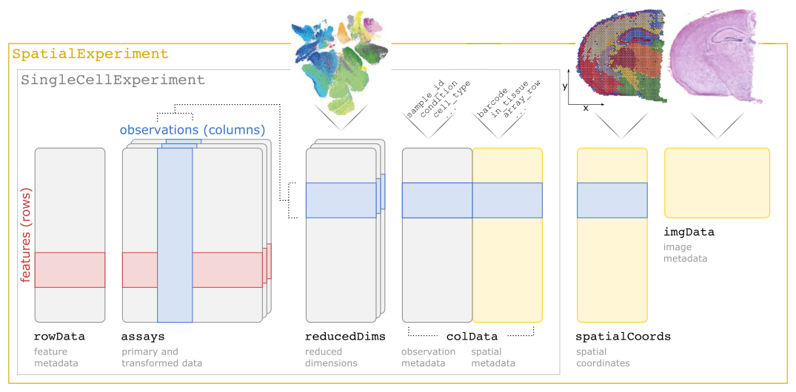
As shown, an object consists of: (i) assays containing expression counts, (ii) rowData containing information on features, i.e. genes, (iii) colData containing information on spots or cells, including nonspatial and spatial metadata, (iv) spatialCoords containing spatial coordinates, and (v) imgData containing image data.
Quality control
Importing CosMx data
SpatialExperimentIO provides functions to import CosMx (Bruker), Xenium (10x Genomics), and MERSCOPE (Vizgen) datasets into SingleCell/SpatialExperiment objects, starting from the outputs provided by the three providers.
# retrieve CosMx dataset from OSF repo
id <- "CosMx1k_MouseBrain2"
pa <- OSTA.data_load(id, mol=FALSE)
dir.create(td <- tempfile())
unzip(pa, exdir=td)
cos <- readCosmxSXE(td, addTx=FALSE)
# prepare data for 'SpaceTrooper'
cos <- updateCosmxSPE(cos, td, sampleName="CosMx")
cos <- readAndAddPolygonsToSPE(cos)
cos$in_tissue <- TRUE
cosclass: SpatialExperiment
dim: 950 48556
metadata(4): fov_positions fov_dim polygons technology
assays(1): counts
rownames(950): Chrna4 Slc6a1 ... Cck Aqp4
rowData names(0):
colnames(48556): f1_c1 f1_c10 ... f99_c98 f99_c99
colData names(22): fov cellID ... polygons in_tissue
reducedDimNames(0):
mainExpName: NULL
altExpNames(1): NegPrb
spatialCoords names(2) : CenterX_global_px CenterY_global_px
imgData names(1): sample_idVisualization
Imaging-based ST data relies on imaging a 2D tissue section. Hence, an advantage compared to scRNA-seq is that we can readily visualize a 2D map of the cells and directly plot cell features onto the map. The easiest way to visualize the data is by representing the cells as centroids. This is useful to have a global bird’s-eye-view of the tissue.
# points = cell centroids
plotCoords(cos, point_size=0, y_reverse = FALSE) + ggtitle(cos$sample_id)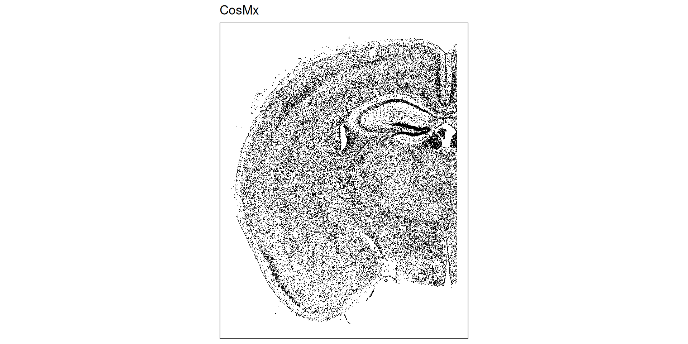
Unlike, Xenium and MERSCOPE, CosMx does not stitch fields of view (FOVs) in a single image, but rather treats each FOV independently. It is therefore useful to visualize a map of the FOVs to understand their spatial arrangement.
plotCellsFovs(cos)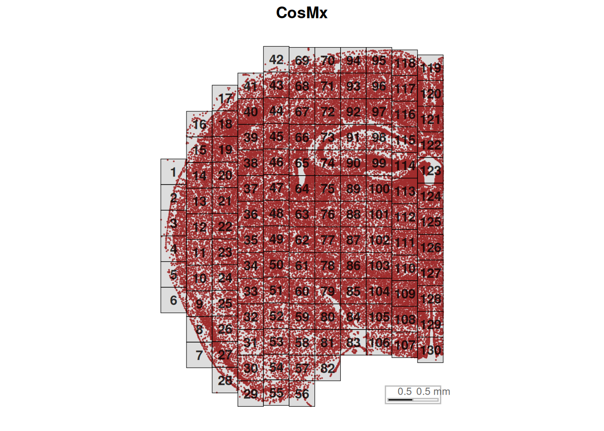
General QC metrics
Similarly to scRNA-seq, quality control (QC) is an important step to remove low-quality cells and highlights specific biases in the data at the sample, field of view (FOV), or slide area level. Unlike scRNA-seq and sequencing-based ST, however, most imaging-based ST platforms do not measure the transcriptome, nor an “unbiased” sample of it, but rely on the design of gene panels.
Depending on the platform and the application, such gene panels may be pan-tissue or targeting specific tissues or cell types. Moreover, they vary from a few hundred (e.g., 313 in the first Xenium panel) to several thousands (e.g., the 5k Xenium panel or the 6k and 18k CosMx panels). Hence, unlike in sequencing-based platforms, we may not have enough ribosomal or mitochondrial transcripts to use for computing QC metrics. However, imaging-based platforms provide a set of negative probes that can be used to check for nonspecific RNA captures.
Finally, imaging-based platforms include, in addition to transcript data, morphology information (such as area and eccentricity of segmented cells) and information from antibody stains (such as those targeting cell nuclei or surface).
Immunofluorescence staining
CosMx outputs, for instance, typically include the min/max/mean intensities of a set of immunofluorescence (IF) markers for, e.g., nuclei and cell surface (used for segmentation), as well as additional markers (experiment-dependent). Here, we show the distribution of mean IF intensities across the CosMx sample.
Values are arcsinh-transformed with a cofactor of 10 for visual purposes
Code
flu <- grepv("^Mean", names(colData(cos)))
lapply(flu, \(.) {
cos[[.]] <- asinh(cos[[.]]/10)
plotCoords(cos, annotate=., point_size=0, y_reverse = FALSE)
}) |>
wrap_plots(nrow=1) &
theme(
legend.position="bottom",
legend.key.height=grid::unit(0.4, "lines")) &
scale_color_gradientn(colors=pals::jet())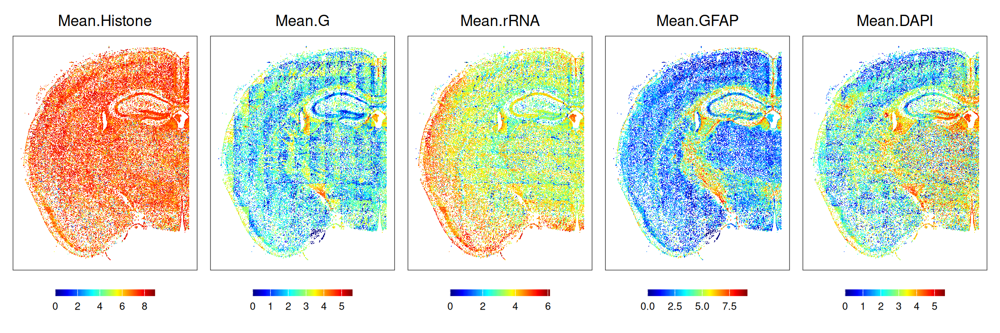
Morphology
SpaceTrooper’s spatialPerCellQC function can be used to compute a set of metrics that are particular to imaging-based ST data; examples listed below. In addition, the function incorporates an internal call to quickRnaQc.se from the scrapper package to compute some standard scRNA-seq QC metrics on an altExp; here, we specify using negative probes.
Note that metrics also include each cell’s distance from horizontal/vertical and nearest FOV borders: dist_border_x/y and dist_border, respectively; we will get back to this in Section 2.4.
# compute 'SpaceTrooper' QC metrics
cos <- spatialPerCellQC(cos, use_altexps="NegPrb")
# the following cell metadata are newly available: [1] "sum" "detected"
[3] "altexps_NegPrb_sum" "altexps_NegPrb_detected"
[5] "altexps_NegPrb_percent" "total"
[7] "control_sum" "control_detected"
[9] "target_sum" "target_detected"
[11] "CenterX_global_px" "CenterY_global_px"
[13] "ctrl_total_ratio" "log2Ctrl_total_ratio"
[15] "CenterX_global_um" "CenterY_global_um"
[17] "Area_um" "dist_border_x"
[19] "dist_border_y" "dist_border"
[21] "log2AspectRatio" "SignalDensity"
[23] "log2SignalDensity" In particular, the following metrics have been added to the colData:
Area_um: area in micronsSignalDensity: count density = number of transcripts per arealog2AspectRatio: log2 of the aspect ratio (x-/y-axis) of each cellctrl_total_ratio: proportion of negative probe counts over total counts
Counts & area
Imaging-based ST data relies on imaging a 2D tissue section. Cells thus represent a slice through a 3D system, and we expect a tight relationship between a cell’s counts and its area. When we inspect total counts and cell areas as separate (univariate) distributions, both appear approximately log-normal distributed.
Code
.p <- \(df, xs) {
fd <- pivot_longer(df, all_of(xs))
mu <- summarise_at(group_by(fd, name), "value", median)
ggplot(fd, aes(value)) + facet_grid(~ name) +
geom_histogram(bins=50, linewidth=0.1, fill="gray") +
geom_vline(data=mu, aes(xintercept=value), col="blue") +
geom_text(
hjust=-0.1, size=3, col="blue",
data=mu, aes(value, 0, label=round(value))) +
scale_x_continuous(NULL, trans="log10") + ylab("# cells") +
theme_minimal() + theme(panel.grid.minor=element_blank())
}
df_cos <- data.frame(colData(cos), spatialCoords(cos))
.p(df_cos, c("Area_um", "total")) + ggtitle("CosMx")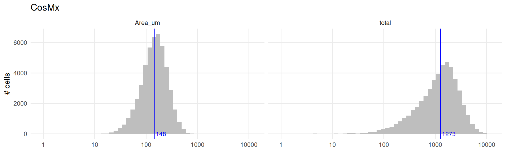
Similarly, we can visualize the distribution of these metrics in the tissue by plotting cell centroids colored by total counts and cell area, respectively.
Code
lapply(c("Area_um", "total"), \(.) {
# crop very low/high values for clearer visualization
val <- cos[[.]]
qs <- quantile(val, c(0.01, 0.99))
val <- ifelse(val < qs[1], qs[1], ifelse(val > qs[2], qs[2], val))
cos[[.]] <- val
plotCoords(cos, annotate=., point_size=0, y_reverse = FALSE) +
theme(legend.key.width=grid::unit(0.5, "lines")) +
scale_color_gradientn(colors=unname(pals::jet()), trans="log10")
}) |> wrap_plots(nrow=1)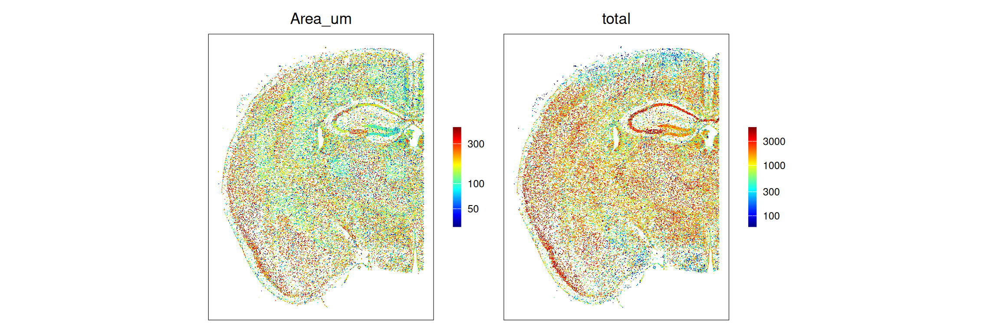
In a bivariate setting, we observe a positive relationship between counts and area (as expected).
Code
.p <- \(df, x, y) {
ggplot(df, aes(.data[[x]], .data[[y]])) +
geom_point(shape=16, size=0, alpha=0.1) +
geom_smooth(method="lm", col="blue") +
scale_x_log10() + scale_y_log10() +
theme_minimal() + theme(
aspect.ratio=1,
panel.grid.minor=element_blank())
}
.p(df_cos, "Area_um", "total") + ggtitle("CosMx")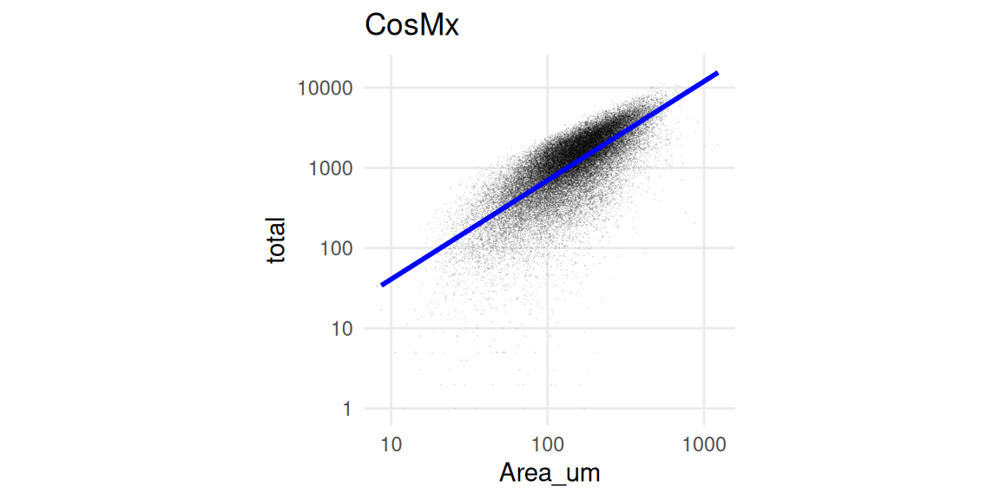
In some cases, a peculiar count-area distribution might be indicative of segmentation problems. Undersegmentation (i.e., when groups of cells are merged together) might lead to fewer counts than expected for a given area (e.g., when they are far apart and empty space is being segmented).
A useful metric to explore this issue is the
log2SignalDensity, which estimates the transcript density for each cell.CosMx-specific QC
Fields of view (FOVs)
Imaging-based ST data from CosMx are acquired through iterative imaging of predefined rectangular regions, so-called fields of view (FOV).
Unlike Xenium and MERSCOPE, standard CosMx pipelines do not stitch FOVs, but rather treat each FOV independently. The colData of the SpatialExperiment object resulting from a CosMx data import will include the FOV of each cell, but it is sometimes tricky to understand (or remember) the relative position of each FOV within the slide.
SpaceTrooper’s plotZoomFovsMap function provides an easy way to map FOVs within the slide, allowing to zoom in on a subset of FOVs, while visualizing the global structure of the tissue.
plotZoomFovsMap(cos,
mapPointCol="green",
colourBy="Mean.DAPI",
fovs=c(98:100, 113:115, 122:124))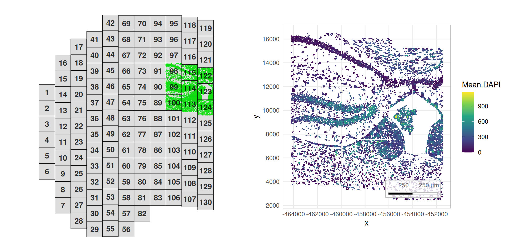
Assuming FOV placement aims to capture biologically interesting regions – regions of interest (ROIs) – we would expect every FOV to capture a decent number of cells. Issues in image registration or IF staining, however, may affect spot calling and cell segmentation, and can yield FOVs with virtually no cells. We thus advice inspecting the number of cells across FOVs:
Code
ns <- as.data.frame(
table(fov=cos$fov),
responseName="n_cells")
ggplot(ns, aes(fov, n_cells)) +
scale_x_discrete(breaks=c(1, seq(5, max(cos$fov), 5))) +
scale_y_continuous(limits=c(0, 1e3), n.breaks=4) +
labs(x="field of view (FOV)", y="# cells") +
geom_col(fill="grey", alpha=2/3) +
coord_cartesian(expand=FALSE) +
theme_bw()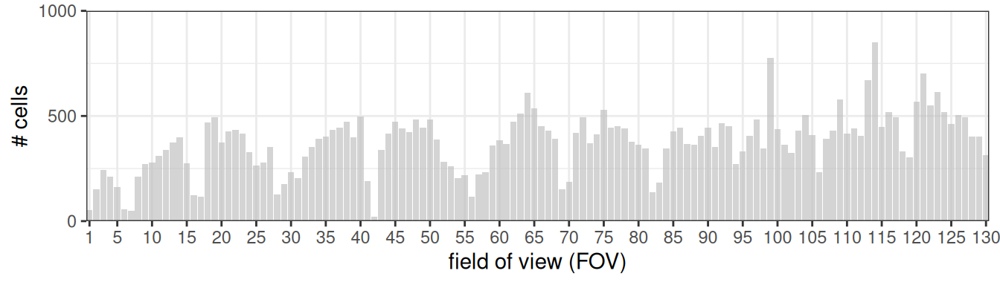
It is generally also worth checking that basic QC metrics do not vary across FOVs. Of course, such effects will also be driven by differences in subpopulation composition across FOVs. However, gross differences in detection efficacy, IF staining, spot calling, segmentation, etc. often still manifest in FOV-level shifts in IF stains and/or RNA target, negative probe, system control counts. A simple spot-check is the following type of visualization, but more thorough investigation is advisable ‘in the wild’, especially so in challenging types of tissue:
Code
df <- data.frame(colData(cos))
ys <- c("detected", "total", "Area_um", "log2SignalDensity")
ys <- c(grepv("Mean", names(df)), ys)
fd <- pivot_longer(df, ys) |>
mutate(value=case_when(
grepl("Mean", name) ~ asinh(value),
grepl("total", name) ~ log10(value),
grepl("^Area", name) ~ log10(value),
TRUE ~ value), fov=factor(fov))
ggplot(fd, aes(fov, value, fill=fov)) +
facet_wrap(~name, nrow=3, scales="free_y") +
geom_boxplot(linewidth=0.2, outlier.size=0.2) +
scale_x_discrete(breaks=c(1, seq(10, max(cos$fov), 10))) +
theme_minimal() + theme(legend.position="none") +
labs(x="field of view (FOV)", y=NULL)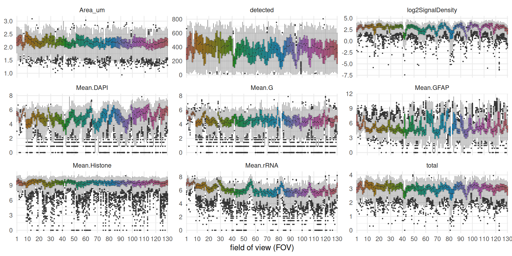
In our example, DAPI stains, RNA target counts (total), and the number of uniquely detected RNA targets (detected) are fairly constant across FOVs; systematic differences seem to reflect morphological differences across FOVs. Taken together, we cannot deem any FOVs as being obviously problematic here.
Border effects
Particularly in CosMx, lack of FOV stitching during cell segmentation can result in fractured and possibly duplicated cells. To investigate potential artifacts related to this, we can use the distance to FOV borders calculated previously.
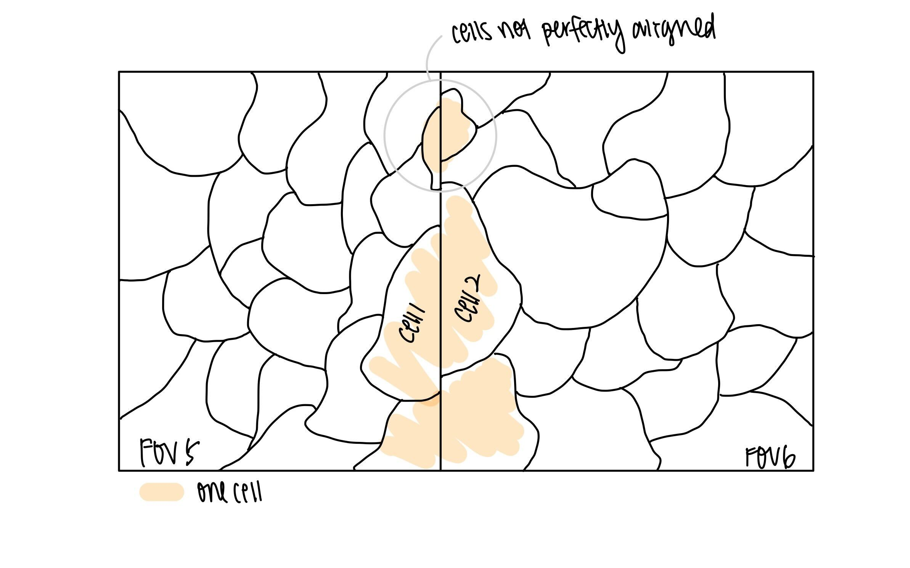
We can roughly estimate cell radii as \(A=\pi r^2\) \(\leftrightarrow r=\sqrt{A/\pi}\), and use this as a threshold on FOV border distances; i.e., we flag a cell when its centroid is closer to any border than the radius of an average circular cell.
(r <- sqrt(mean(cos$Area)/pi))[1] 60.55499Now, let us visualize total RNA counts against distance to FOV borders, setting the above estimate for radius r as a threshold on the latter; we also include rolling means to better highlight global trends:
Code
df <- data.frame(colData(cos))
.p <- \(df, x, y) {
ggplot(df, aes(.data[[x]], .data[[y]])) +
geom_point(color="grey", size=0) +
geom_smooth() + theme_minimal() +
geom_vline(xintercept=r, col="red") +
geom_vline(xintercept=50, linetype=2)
}
p1 <- .p(df, "dist_border", "total") + xlim(0, 500) + ylim(0, 2000)
p2 <- .p(df, "dist_border", "Area_um") + xlim(0, 500) + ylim(0, 200)
p3 <- .p(df, "dist_border_x", "log2AspectRatio") + xlim(0, 500)
p4 <- .p(df, "dist_border_y", "log2AspectRatio") + xlim(0, 500)
(p1 + p2) / (p3 + p4) 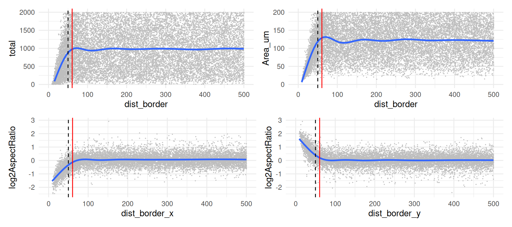
As expected, we observe a decline in counts near FOV borders, with about 6.6% of cells falling below \(r\) (red line) and 5.1% of cells falling below 50 pixels (dashed line).
These cells exhibit lower total counts and smaller segmented areas, as well as a distortion in their aspect ratio (thin cells close to the y border and broad cells close to the x border).
To mitigate potential artifacts in downstream analyses, we may choose to filter out these cells, or otherwise flag them as potentially problematic events to be kept a cautionary eye on.
Code
# highlight border cells across
# the tissue (using cell centroids)
cos$ex <- df$dist_border < r
plotCentroids(cos, colourBy="ex", sampleId=NULL) +
scale_color_manual(values=c("lavender", "blue")) +
guides(col=guide_legend(override.aes=list(size=2))) +
theme_void() + theme(legend.key.size=grid::unit(0, "pt"))
# zoom in on subset of FOVs
# visualizing cell boundaries
fs <- c(98:100, 113:115, 122:124)
plotPolygons(
cos[, cos$fov %in% fs],
colourBy="ex", sampleId=NULL,
borderCol="black", palette=c("lavender", "blue")) +
theme(legend.position="none")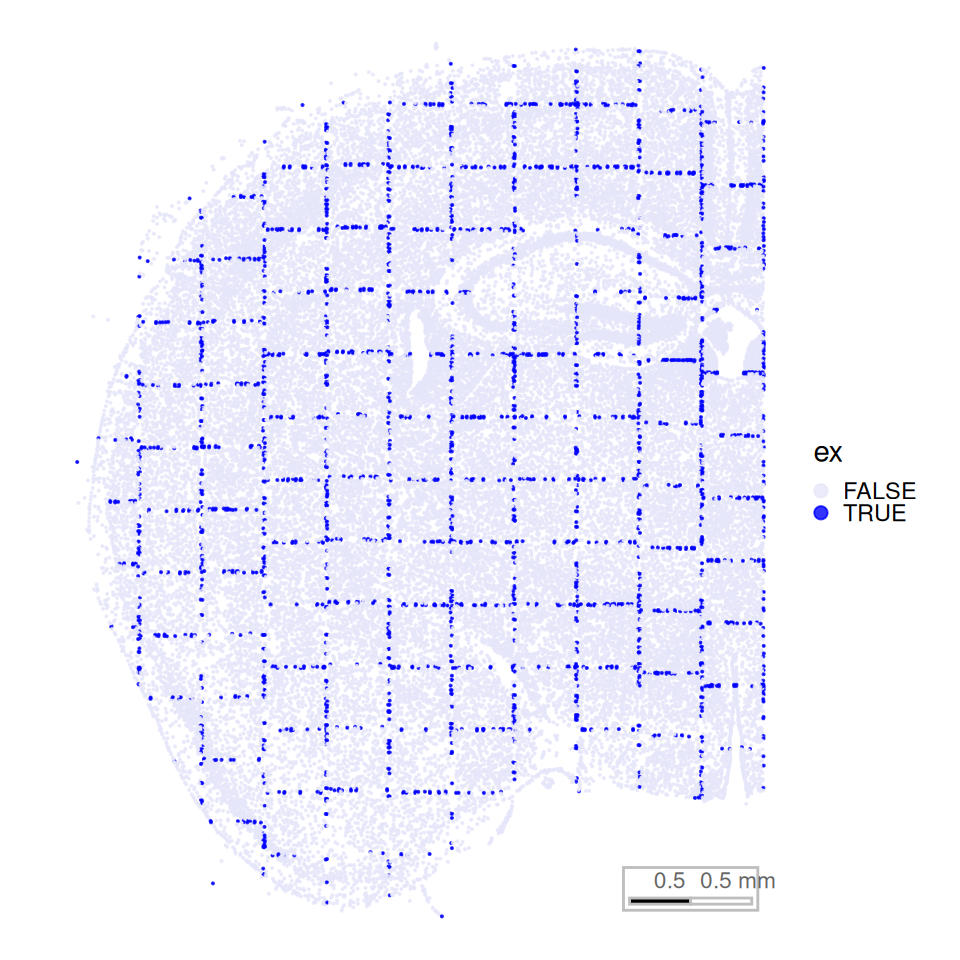
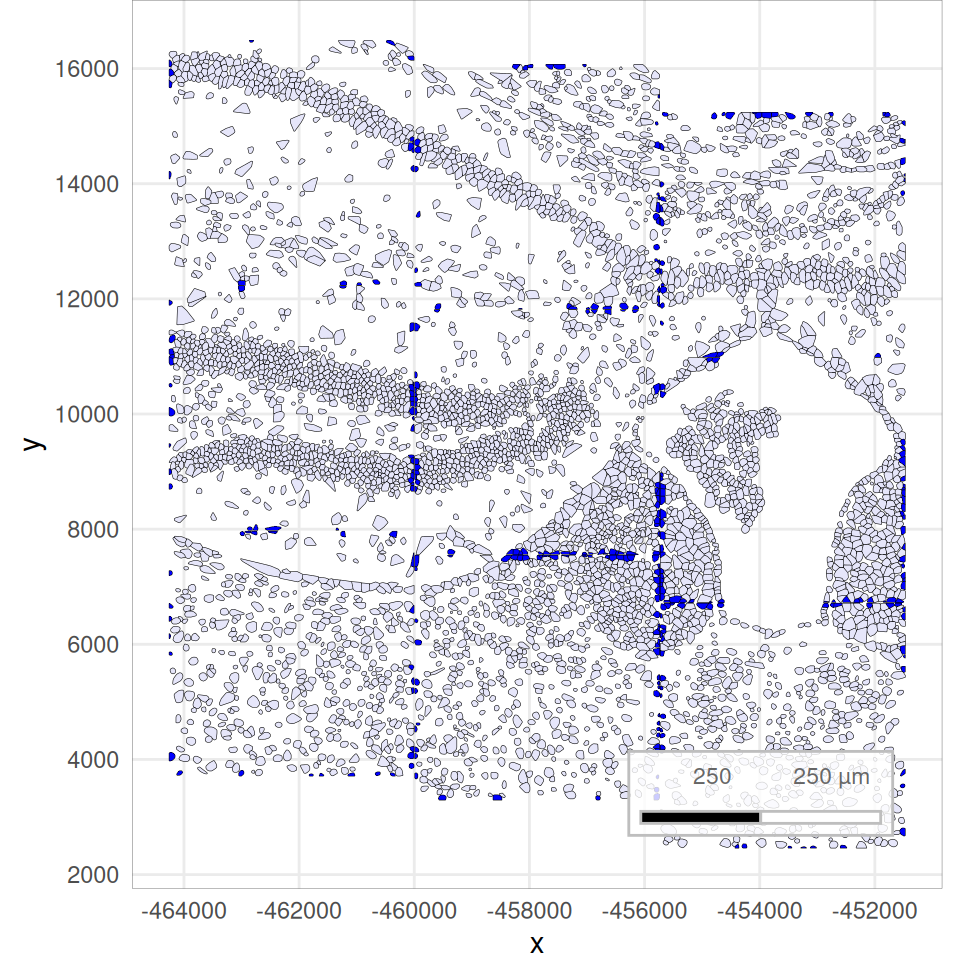
Identifying low-quality cells
We can now use the QC metrics calculated above to flag (and potentially remove) low-quality cells.
Individual metrics
First, we can consider metrics separately looking for outliers in their distribution. Depending on the metric, we are interested in low-end or high-end outliers (or both). For instance, we may want to exclude too small/large cells as potential artifacts.
SpaceTrooper provides a function to compute outliers of the distribution of any QC metric present in the colData of the object. We can then visualize the distribution and outlier threshold with a histogram.
cos <- computeSpatialOutlier(cos, computeBy="total", method="mc")
cos <- computeSpatialOutlier(cos, computeBy="Area_um", method="mc")
plotMetricHist(cos, metric="total", useFences="total_outlier_mc") +
plotMetricHist(cos, metric="Area_um", useFences="Area_um_outlier_mc")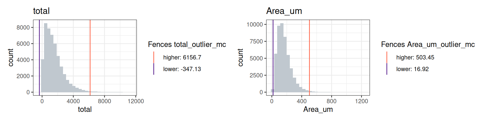
In the CosMx data, we identify 332 outliers for total counts and 339 outliers for area.
Combined score
Finally, we can compute an aggregated quality score, which combines a cell’s transcript density, aspect ratio and (for CosMx) distance from FOV borders.
Specifically, SpaceTrooper’s computeQCScore function will compute a combined quality score based on count density (log2SignalDensity), cell aspect ratio (log2AspectRatio), only for cells closer than a specified distance from FOV borders, and control-to-total count ratio (log2Ctrl_total_ratio). The count density is computed as the ratio between the per cell total gene counts divided by the cell area; the aspect ratio represents FOV border effect typical of CosMx datasets; the control-to-total ratio is the ratio between counts for control probes and total counts per cell and represents nonspecific signal.
The quality score is computed using a ridge logistic regression model, which predicts a score between 0 and 1, where higher scores indicate better quality cells, using the following model formula: ~(log2SignalDensity + Area_um + log2Ctrl_total_ratio + I(abs(log2AspectRatio) * as.numeric(dist_border<50)))^2, where the ^2 notation indicates all pairwise interactions among the included variables. See ?computeQCScore for details.
Here, computeQCScore() will add a (numeric) QC_score, and computeQCScoreFlags will add a (logical) low_qcscore slot to the input SPE’s colData; the latter flags low-quality cells.
# compute quality scores & flag cells that
# fall below specified percentile threshold
cos <- computeQCScore(cos)
cos <- computeQCScoreFlags(cos,
qsThreshold=0.5)
# the following slots have now been
# added to the object's cell metadata
nms <- names(colData(cos))
sco <- grepv("score$", nms)
head(colData(cos)[sco])DataFrame with 6 rows and 2 columns
QC_score low_qcscore
<numeric> <logical>
f1_c1 0.0973765 TRUE
f1_c10 0.9299896 FALSE
f1_c11 0.7172020 FALSE
f1_c12 0.7863576 FALSE
f1_c13 0.8624393 FALSE
f1_c14 0.4683376 TRUECode
# visualize quality scores & highlight flagged cells
thm <- list(theme_void(), ggtitle(""), coord_equal())
plotCentroids(cos, colourBy="QC_score") + thm +
plotCentroids(cos, colourBy="low_qcscore") + thm +
guides(col=guide_legend(override.aes=list(size=2))) +
scale_color_manual(values=c("lavender", "blue")) +
theme(legend.key.size=grid::unit(0, "pt")) 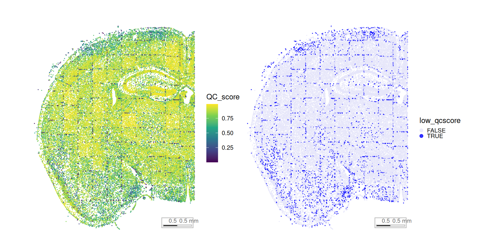
We can see how the QC score flags several cells close to the tissue border as well as cells close to the FOVs borders.
Filtering
Using SpaceTroopers quality score, we will filter the CosMx dataset which would exclude about 7% of cells.
# fraction of low-quality CosMx cells
mean(cos$low_qcscore)[1] 0.07242168Conclusion
In a stringent analysis, we may want to remove low-quality cells, but this has to be done with caution: before excluding any cells, it is recommendable to inspect where these fall in the tissue. We would expect low-quality cells to be distributed randomly, and otherwise to accumulate at the tissue or FOV borders or in regions were tissue was, for example, smudged, detached, necrotic etc.
In general, spatially organized clusters of excluded cells might indicate a bias towards excluding specific types of cells (e.g., some immune cells tend to be smaller or might otherwise contain fewer transcripts due to the panel design). Whenever possible, we advice readers to cross-check visualizations like the following with a corresponding H&E stain of the tissue, considering possible experimental faults as well as their prior knowledge on tissue pathology.
Intermediate processing
For the sake of runtime, we will perform downstream analyses only on a small portion of the tissue, defined by the following FOVs:
fs <- c(72:74, 90:92, 97:99, 114:116)
plotZoomFovsMap(cos, fovs=fs)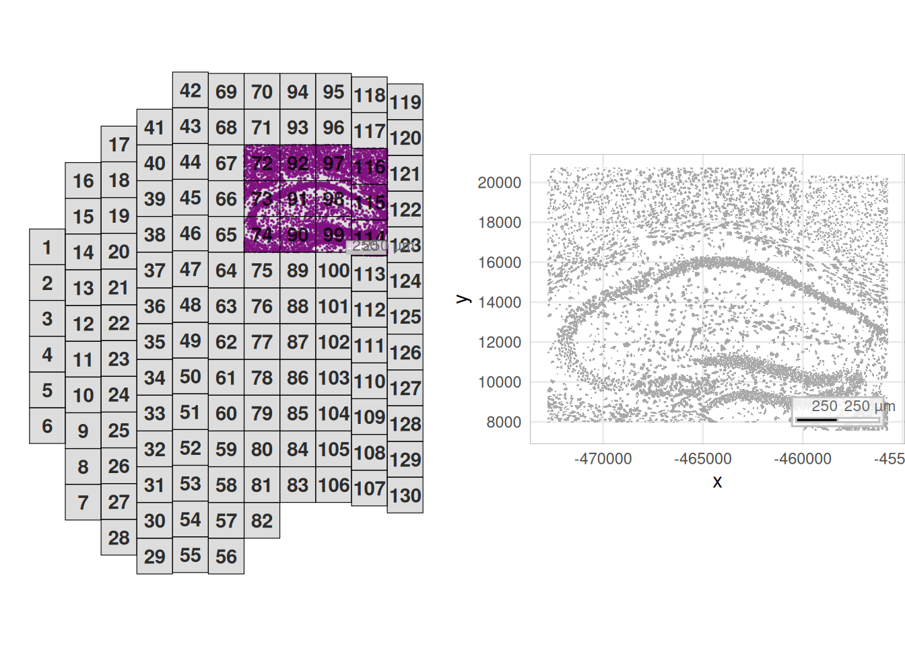
sub <- cos[, cos$fov %in% fs]Normalization
Normalization is a critical step in the analysis of transcriptomics and other high-throughput biological data, aiming to remove technical variability while preserving true biological signals.
In single-cell RNA sequencing, normalization aims at removing differences in sequencing coverage between libraries (cells). Such differences in library size are typically accounted for by scaling the counts in each cell by a size factor, which is often computed as the total number of counts for that cell (or a robust variant thereof); see OSCA.
Single-cell normalization methods have been widely used for the analysis of spatial transcriptomics (ST) data, given the similarity between the two technologies, which both yield count data. While this is justifiable for sequencing-based ST technologies, it is less clear that this is appropriate for imaging-based ones.
In fact, in imaging-based ST, the total number of counts is driven by the number of probes that successfully hybridize to their target transcripts within each cell and not by the sequencing coverage. It is hence less clear that this leads to the same compositional biases as in sequencing platforms. Moreover, these technologies often employ targeted gene panels rather than whole-transcriptome profiling, which may lead to confounding between total counts and biology, as shown by Atta et al. (2024) and Bhuva et al. (2024).
Cell area-based normalization
An alternative to log-library size normalization is normalization by cell area (or volume). In principle, this is equivalent to assuming a constant transcription rate across cells and focusing on transcript density, rather than transcript counts, as a measure of gene expression.
Nevertheless, it is important to highlight that cell area itself is not known a priori, but rather estimated through segmentation algorithms that may introduce errors, which can impact the final results.
To compute area-derived size factors, we can use the cell_area column in the colData of the spe object, which contains the area of each cell as estimated by the segmentation.
# cell area-based normalization
sfs <- (. <- sub$Area) / median(.)
sub <- normalizeRnaCounts.se(sub, size.factors=sfs)Extension: Comparing Normalization Methods
Log-library size normalization is the simplest normalization strategy and the default option in several single-cell RNA-seq workflows. It normalizes the data by dividing each count by the column sums and rescaling them so that the original scale of the counts is preserved. Finally, the resulting normalized data are log-transformed after adding a pseudo-count, typically one, to avoid issues with the log of zero.
For the purposes of demonstration, we will use a 313-plex Xenium data (10x Genomics) of a human breast cancer biopsy section from Janesick et al. (2023).
spe <- readRDS("img-spe_qc.rds")
id <- "Xenium_HumanBreast1_Janesick"
pa <- OSTA.data_load(id, mol=FALSE)
dir.create(td <- tempfile())
unzip(pa, "annotation.csv", exdir=td)
df <- read.csv(list.files(td, full.names=TRUE))
# add annotations as cell metadata
cs <- match(spe$cell_id, df$Barcode)
spe$Label <- df$Annotation[cs]As a baseline, we will apply log-library size normalization, as implemented in the scrapper package. Note that the normalizeRnaCounts.se function adds a new assay named logcounts to the spe object, which contains the normalized expression values on the log scale.
spe <- spe[, colSums(assay(spe, "counts")) > 0]
spe <- normalizeRnaCounts.se(spe)
spe$sf_lib <- sizeFactors(spe)
assayNames(spe)[1] "counts" "logcounts"We will also normalise by area-derived size factors as a comparison.
spe$sf_area <- (. <- spe$cell_area) / median(.)
spe <- normalizeRnaCounts.se(spe,
size.factors=spe$sf_area,
output.name="normalized_by_area")We can check the distribution of library and area-derived size factors across cell types, to highlight any potential confounding variables:
Code
df <- data.frame(colData(spe), spatialCoords(spe))
p1 <- ggplot(df, aes(y=sf_lib)) + ggtitle("Library size factors")
p2 <- ggplot(df, aes(y=sf_area)) + ggtitle("Area-derived factors")
(p1 + p2) &
geom_boxplot(aes(Label, fill=Label)) &
labs(x="Cell type", y="Size factor") &
scale_fill_manual(values=unname(pals::tableau20())) &
theme_bw() & theme(
aspect.ratio=1,
legend.position="none",
panel.grid.minor=element_blank(),
plot.title=element_text(hjust=0.5),
axis.text.x=element_text(angle=45, hjust=1))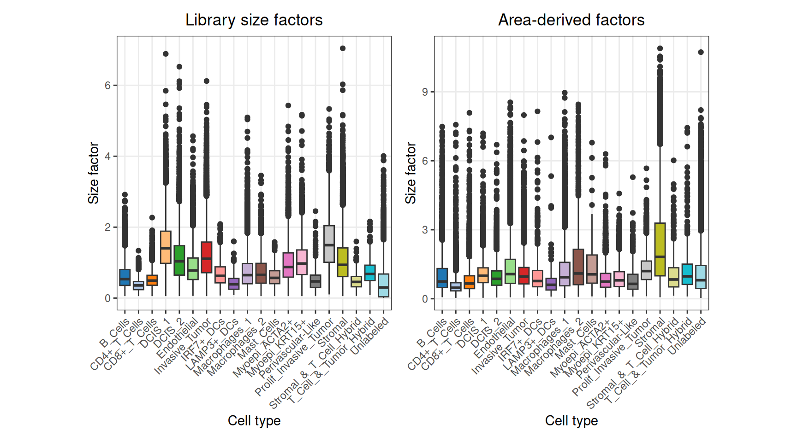
We can clearly see that library size factors of tumor cells are systematically higher than those of other cell types, which is a sign of confounding between library size and biology.
We can also compare the area-derived scaling factors with the library size factors:
Code
ggplot(df, aes(sf_area, sf_lib)) +
geom_point(shape=16, stroke=0, size=0.4) +
geom_abline(linewidth=0.4, col="blue") +
facet_wrap(~Label) +
labs(x="Area-derived factor", y="Library size factor") +
ggtitle("Relation between area-derived and library size factors") +
coord_equal() + theme_bw() + theme(
panel.grid.minor=element_blank(),
plot.title=element_text(hjust=0.5))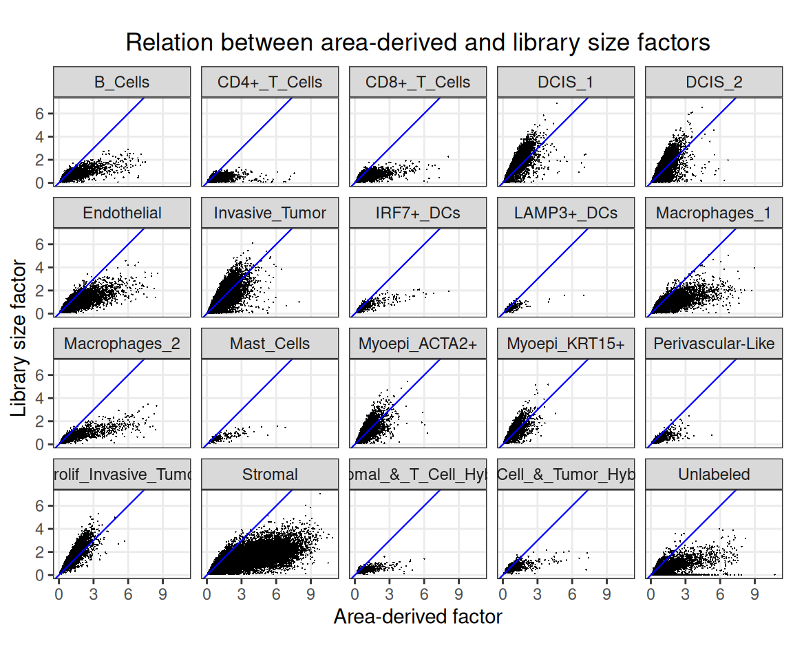
While there is a general correlation between total counts and cell area, the relationship is cell-type specific, with tumor cells showing systematically higher counts for a given area, and stromal cells showing generally larger areas.
This suggests that the choice of normalization may have a significant impact on downstream analyses, and should be carefully considered in the context of the specific dataset and biological questions at hand.
We next look at the difference in normalized expression values between the two normalization methods, and select the top 10 genes that show the largest differences.
mean_libs <- rowMeans(assays(spe)$logcounts)
mean_area <- rowMeans(assays(spe)$normalized_by_area)
diff <- abs(mean_libs - mean_area)
ord <- order(diff, decreasing=TRUE)
top_diff <- diff[ord[1:10]]
names(top_diff) [1] "EPCAM" "KRT8" "KRT7" "TACSTD2" "GATA3" "CD9" "FOXA1"
[8] "FASN" "MLPH" "SCD" By looking at the top genes, we can see several epithelial cell markers, such as EPCAM, KRT8, and KRT7.
Interestingly, looking at the expression of EPCAM across the tissue, we can see that area normalization enhances the contrast between tumor and non-tumor regions, while library size normalization yields a more diffuse expression pattern.
Code
cd <- data.frame(colData(spe), spatialCoords(spe))
mx <- logcounts(spe)[ord[1:10], ]
df_ls <- cbind(cd, as.matrix(t(mx)))
mx <- assay(spe, "normalized_by_area")[ord[1:10], ]
df_area <- cbind(cd, as.matrix(t(mx)))
p1 <- ggplot(df_ls) + labs(title="Library size normalization")
p2 <- ggplot(df_area) + labs(title="Area normalization")
(p1 + p2) &
geom_point(
aes(x_centroid, y_centroid, col=EPCAM),
shape=16, stroke=0, size=0.4) &
scale_color_viridis_c() & coord_equal() &
theme_void() & theme(legend.position="bottom")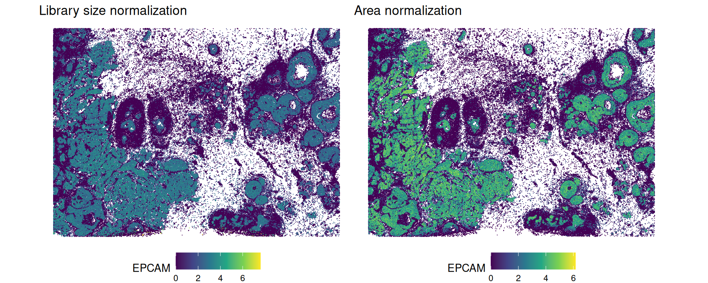
This is even clearer when looking at the expression of EPCAM stratified by cell type.
Code
(p1 + p2) &
geom_boxplot(
aes(Label, EPCAM, fill=Label),
outlier.shape=16, outlier.stroke=0) &
scale_fill_manual(values=unname(pals::tableau20())) &
labs(x="Cell type", y="EPCAM expression") &
theme_bw() & theme(
aspect.ratio=1,
legend.position="none",
panel.grid.minor=element_blank(),
plot.title=element_text(hjust=0.5),
axis.text.x=element_text(angle=45, hjust=1))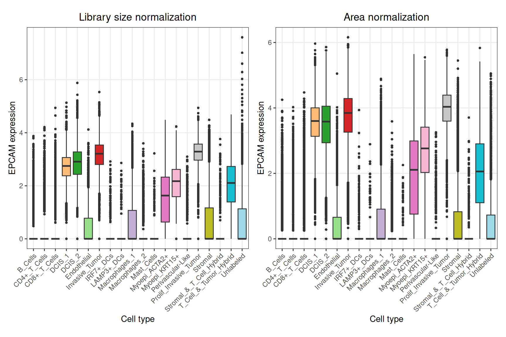
Cell Type Annotation
Here, we use the Zeisel et al. (2015) dataset as a reference to annotate the cell types with SingleR.
sceZ <- ZeiselBrainData()
sceZ <- normalizeRnaCounts.se(sceZ)pred <- SingleR(
test=sub, ref=sceZ,
de.method="wilcox",
labels=sceZ$level1class)
sub$SingleR_label <- factor(pred$pruned.labels)
nk <- nlevels(sub$SingleR_label)
pal <- hcl.colors(nk, "Spectral")
plotPolygons(sub,
colourBy="SingleR_label") +
scale_fill_manual(values=pal)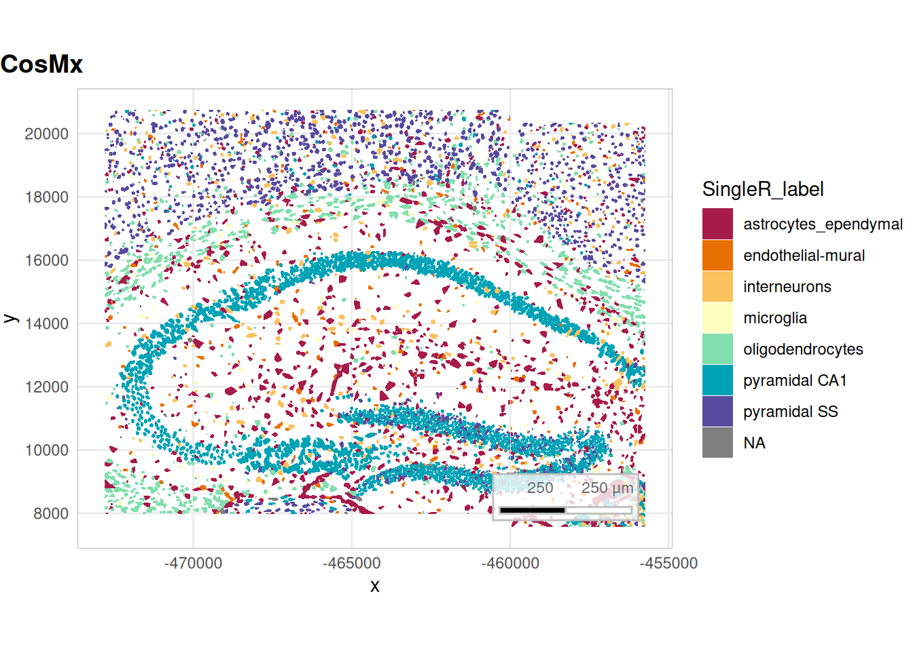
Note that the annotation performed here is a transfer label from a reference dataset that only partially matches with the tissue under study and purposely annotated at a coarse level (level 1). Ideally, one can use a more appropriate reference dataset, or better yet, build a custom reference from single-cell RNA-seq data of the same tissue.
A different, often preferable, approach consists of using, in addition to the gene expression profiles, the image data and the spatial context of the cells. InSituType (Danaher et al. 2022) provides a framework to perform such analysis in unsupervised, semi-supervised, or supervised manners. Please refer to its documentation for more details.
Marker genes
Here, we identify cluster-related spatially-variable genes using the DESpace package (Cai et al. 2024). In this workflow, we use this as a way to identify marker genes for the cell types annotated above.
res <- svg_test(spe=sub, cluster_col="SingleR_label")
head(res$gene_results) gene_id LR logCPM PValue FDR
Itm2a Itm2a 2473.574 11.05636 0 0
Flt1 Flt1 2446.949 11.07687 0 0
Cldn5 Cldn5 2663.111 11.14306 0 0
Gja1 Gja1 4932.541 11.33572 0 0
Bcan Bcan 3684.278 11.64762 0 0
Gpr37l1 Gpr37l1 4915.203 11.34752 0 0We focus on the genes with the smallest p-values, and compute the average expression of each gene in each cell type. We can visualize this with a heatmap.
df <- res$gene_results
gs <- df$gene_id[rank(df$PValue, ties.method="min") == 1]
mu <- t(apply(counts(sub)[gs, ], 1, tapply, sub$SingleR_label, mean))
pheatmap(t(mu),
scale="column", show_colnames=FALSE,
cluster_rows=TRUE, cluster_cols=TRUE,
main="Average expression of top SVGs per cell type")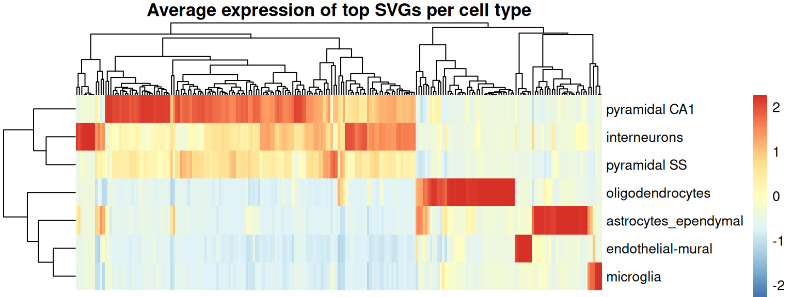
We can also visualize the spatial distribution of some of these genes, e.g., Mbp that marks oligodendrocytes, and Calm1, Calm2, and Snap25 that mark different subsets of neurons. Note also how some genes show a difference of expression within the pyramidal neuron population, suggesting the presence of subtypes.
gs <- c("Mbp", "Calm1", "Calm2", "Snap25")
ps <- lapply(gs, \(g) {
sub[[g]] <- logcounts(sub)[g, ]
plotPolygons(sub, colourBy=g) + ggtitle(g)
})
dy <- range(logcounts(sub)[gs, ])
wrap_plots(ps, guides="collect") &
scale_fill_viridis_c(
"expression",
limits=dy, breaks=dy,
labels=c("low", "high")) &
theme(plot.title=element_text(hjust=0.5))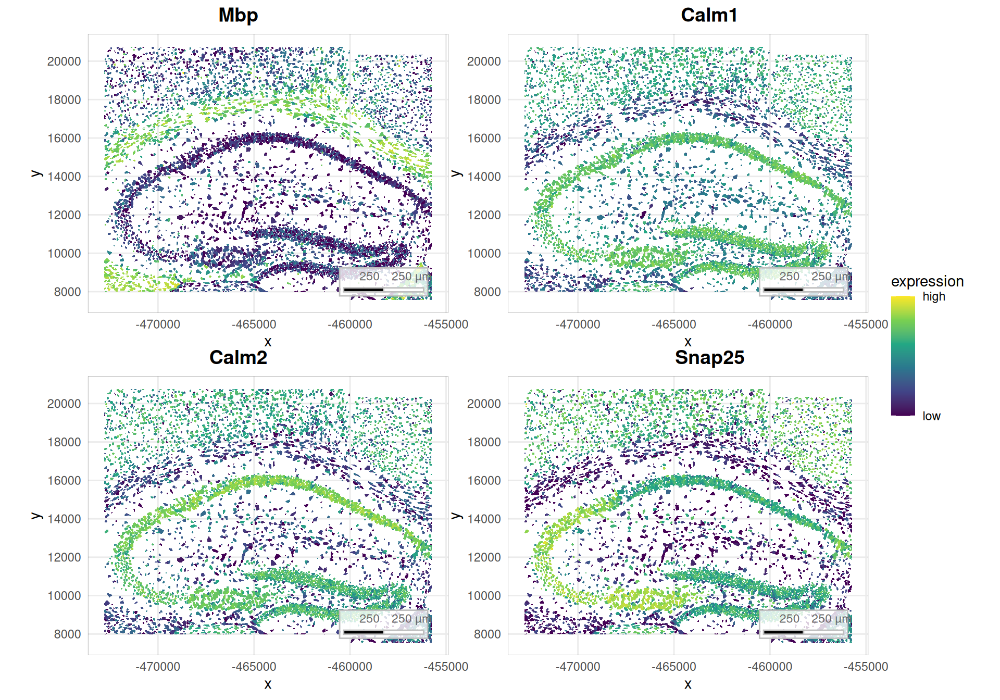
Neighborhood-based gene expression analyses
We start by creating a cell neighborhood graph, based on a distance threshold of 50 microns. To do so, we use the SpatialFeatureExperiment package (Moses et al. 2023)
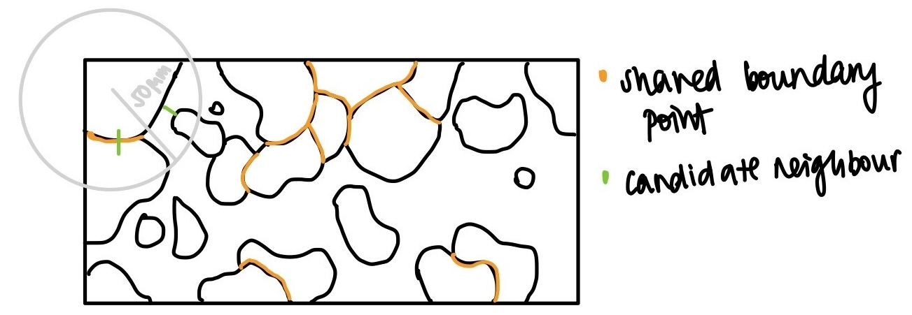
findSpatialNeighbors function works.Note that an alternative approach uses the \(k\) nearest neighbors (kNN) method to define the neighborhood graph. Here, we prefer to use a distance-based approach, as it better captures the morphological structure of this tissue area.
# convert to SFE & remove cells with NA labels
sfe <- as(sub, "SpatialFeatureExperiment")
sfe <- sfe[, !is.na(sfe$SingleR_label)]
# this is needed for Voyager's plotting functions
colnames(sfe$polygons)[6] <- "geometry"
st_geometry(sfe$polygons) <- "geometry"
colGeometry(sfe, "cellSeg") <- sfe$polygons
colGraph(sfe, "poly2nb") <-
findSpatialNeighbors(sfe,
type="cellSeg",
method="poly2nb",
style="W", snap=50)
plotColGraph(sfe,
colGraphName="poly2nb",
colGeometryName="cellSeg") +
theme_void()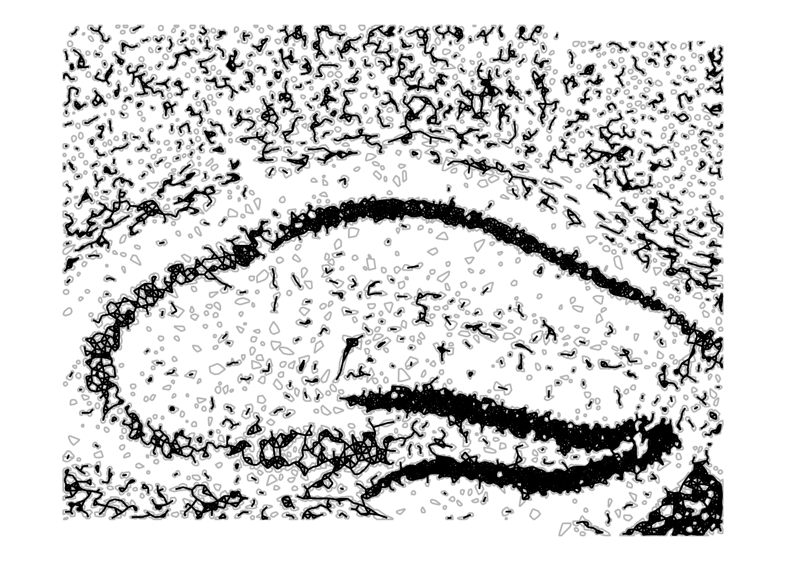
Given the neighborhood graph, we can calculate local measures of spatial autocorrelation for specific genes in the dataset.
Here, we focus on Snap25 and Calm1, neuronal marker genes identified above that show interesting spatial expression distributions (see above). First, we compute the local Moran’s I coefficient.
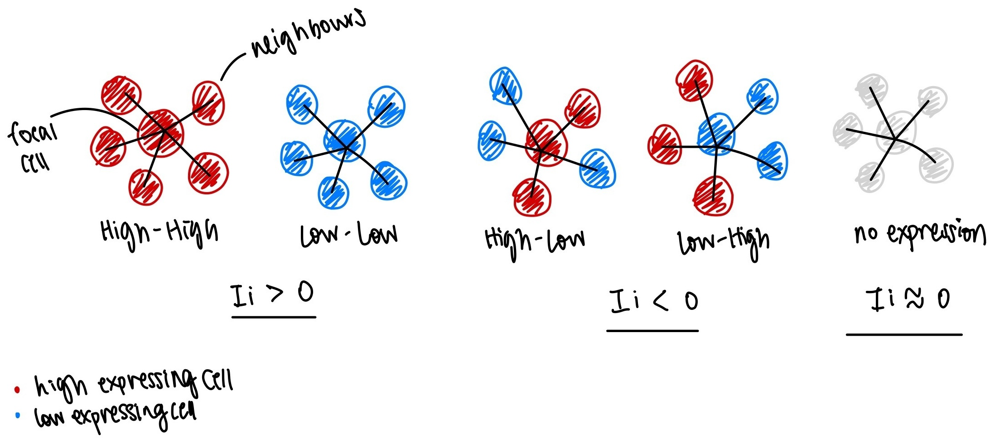
gs <- c("Snap25", "Calm1")
sfe <- runUnivariate(sfe,
features=gs,
type="localmoran",
zero.policy=TRUE,
colGraphName="poly2nb",
colGeometryName="cellSeg")
plotLocalResult(sfe,
name="localmoran",
features=gs, ncol=2,
colGeometryName="cellSeg",
divergent=TRUE, diverge_center=0)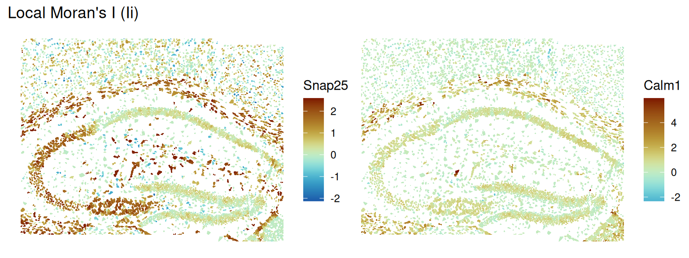
# to view statistics for individual genes
# gene_result <- localResult(sfe, type = "localmoran", feature = "Snap25")From the plots, we can see that Snap25 shows positive spatial autocorrelation in a very localized part of the tissue, while Calm1 shows a more diffuse autocorrelation structure.
We focus on Snap25 and visualize its autocorrelation structure using a Moran scatter plot, which shows the relationship between the expression of the gene in each cell and the average expression in its neighbors.
sfe <- runUnivariate(sfe,
feature=gs[1],
zero.policy=TRUE,
type="moran.plot",
colGraphName="poly2nb",
colGeometryName="cellSeg")
moranPlot(sfe,
feature=gs[1],
graphName="poly2nb",
swap_rownames="symbol")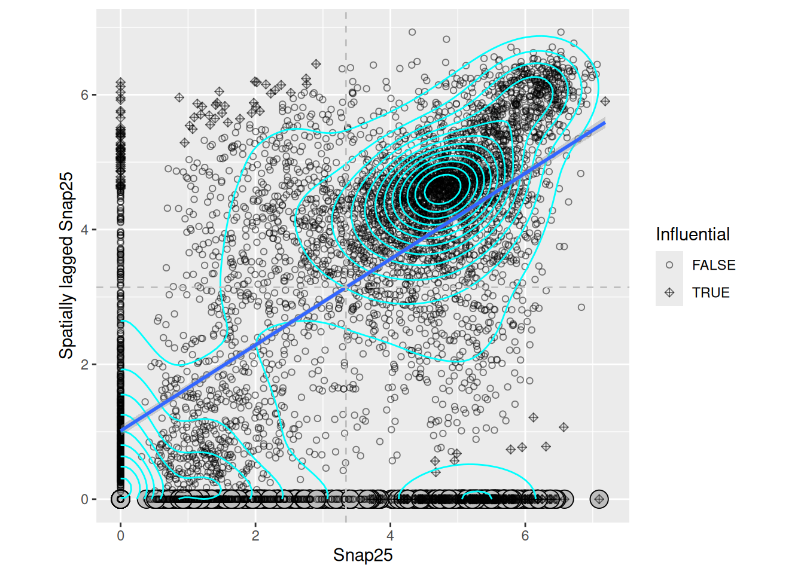
We can then classify cells based on the significance of their local Moran’s I values, and visualize the resulting clusters in the spatial context.
res <- localResults(sfe)[["localmoran"]][[1]]
res$locClust <- with(res, ifelse(
`-log10p_adj` > -log10(0.05),
as.character(mean), "non-significant"))
localResults(sfe)[["localmoran"]][[1]] <- res
plotLocalResult(sfe,
features=gs[1],
name="localmoran",
attribute="locClust",
colGeometryName="cellSeg")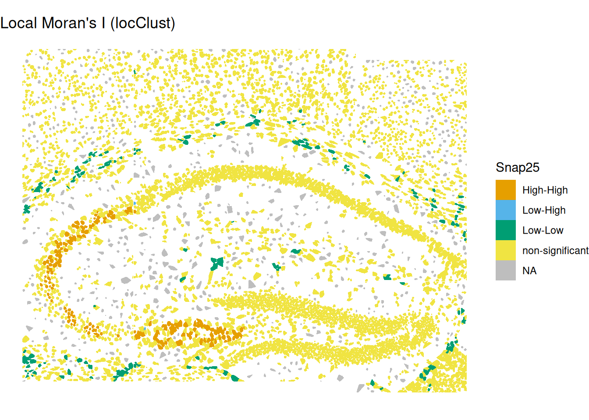
In this case, we can see a significant positive autocorrelation in the lower left part of the structure, while the rest of the tissue does not show significant autocorrelation.
Note that other local spatial autocorrelation measures, such as Geary’s C coefficient and Getis-Ord statistic, as well as their global versions can be used for similar analyses Moses et al. (2023).
Cell-cell interactions
To investigate the likelihood of cells interacting with each other based on spatial proximity, we look at point patterns, such as Ripley’s K function, and similar methods, using for instance the spatialFDA package.
Here, we use Besag’s L function to quantify the interaction between pyramidal CA1 neurons, and the interaction between them and oligodendrocytes (cross-L function).
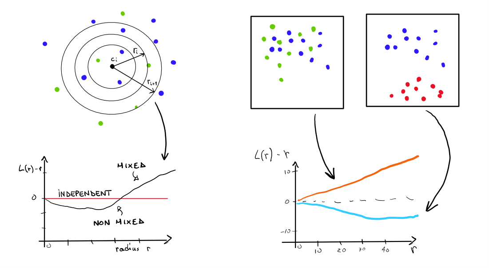
Other methods are available, such as Ripley’s K function, and the pair correlation function (Emons et al. 2025). Note that here we are making the quite strong assumption of homogeneity of the point pattern, which is unrealistic in tissue biology. In particular, CSR is a naïve null model that does not take into account tissue structure and cell density variations across the tissue. Hence, these plots should be considered as exploratory analyses rather than formal hypothesis tests.
res <- calcMetricPerFov(
spe=sub, fun="Lest",
subsetby="sample_id",
marks="SingleR_label",
selection="pyramidal CA1",
rSeq=seq(0, 500, l=100),
by="sample_id", ncores=1)
plotMetricPerFov(res,
theo=TRUE, correction="iso",
x="r", imageId="sample_id")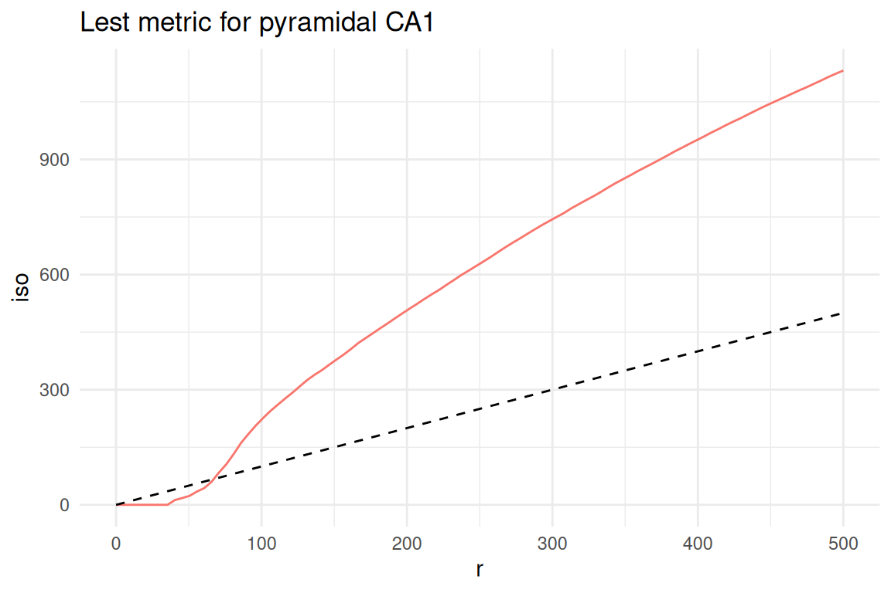
In this type of plots, the dashed line represents the theoretical value of the metric under complete spatial randomness (CSR). Values above this line indicate clustering, while values below indicate dispersion. Here, we can see that pyramidal CA1 neurons tend to cluster together, as expected.
Note that the L-function lays below the CSR line for the first 50 microns, which is a consequence of the cell segmentation that does not allow cells to overlap, indicating the impossibility of finding two cells at a distance smaller than their size.
While in the plot above we focused on a single cell type, we can also investigate the interaction between two different cell types, e.g., pyramidal CA1 neurons and oligodendrocytes, using the cross-L function.
res <- calcMetricPerFov(
spe=sub, fun="Lcross",
subsetby="sample_id",
marks="SingleR_label",
selection=c("pyramidal CA1", "oligodendrocytes"),
rSeq=seq(0, 500, l=100),
by="sample_id", ncores=1)
plotMetricPerFov(res,
theo=TRUE, correction="iso",
x="r", imageId="sample_id")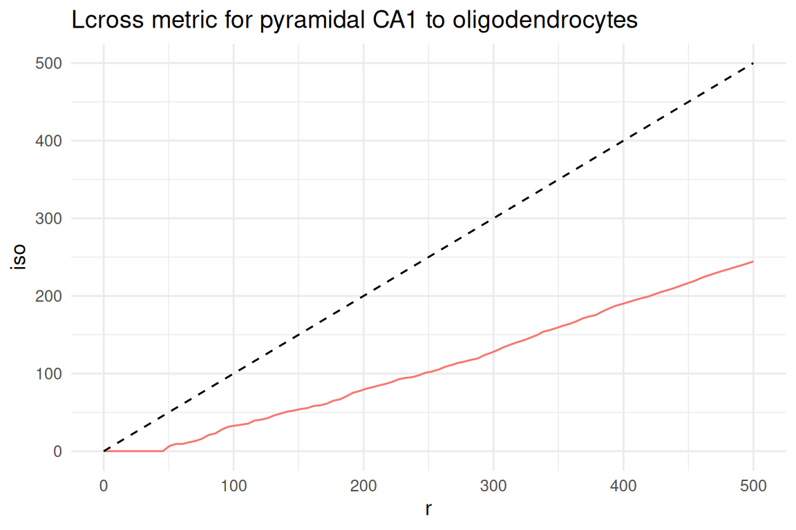
In this case, we can see that pyramidal CA1 neurons and oligodendrocytes tend to be spatially segregated, as indicated by the cross-L function being below the CSR line.
We only briefly discussed cell-cell interactions and spatial exploratory analyses here: we refer interested readers to the comprehensive documentation and tutorials available at the pasta and Voyager websites.
Appendix
Session information
For reproducibility, the exact R and package versions used to render the workshop are reported below.
sessionInfo()R version 4.6.1 (2026-06-24)
Platform: x86_64-pc-linux-gnu
Running under: Ubuntu 24.04.4 LTS
Matrix products: default
BLAS: /usr/lib/x86_64-linux-gnu/openblas-pthread/libblas.so.3
LAPACK: /usr/lib/x86_64-linux-gnu/openblas-pthread/libopenblasp-r0.3.26.so; LAPACK version 3.12.0
locale:
[1] LC_CTYPE=en_US.UTF-8 LC_NUMERIC=C
[3] LC_TIME=en_US.UTF-8 LC_COLLATE=en_US.UTF-8
[5] LC_MONETARY=en_US.UTF-8 LC_MESSAGES=en_US.UTF-8
[7] LC_PAPER=en_US.UTF-8 LC_NAME=C
[9] LC_ADDRESS=C LC_TELEPHONE=C
[11] LC_MEASUREMENT=en_US.UTF-8 LC_IDENTIFICATION=C
time zone: Etc/UTC
tzcode source: system (glibc)
attached base packages:
[1] grid stats4 stats graphics grDevices utils datasets
[8] methods base
other attached packages:
[1] Voyager_1.14.0 spdep_1.4-2
[3] spData_2.3.5 SpatialFeatureExperiment_1.14.0
[5] SpatialExperimentIO_1.4.0 spatialFDA_1.4.0
[7] SpaceTrooper_1.2.0 SpatialExperiment_1.22.0
[9] SingleR_2.14.2 sf_1.1-3
[11] scrapper_1.6.3 scRNAseq_2.26.0
[13] scuttle_1.22.0 SingleCellExperiment_1.34.0
[15] SummarizedExperiment_1.42.0 Biobase_2.72.0
[17] GenomicRanges_1.64.0 Seqinfo_1.2.0
[19] IRanges_2.46.0 S4Vectors_0.50.2
[21] BiocGenerics_0.58.1 generics_0.1.4
[23] MatrixGenerics_1.24.0 matrixStats_1.5.0
[25] ggspavis_1.18.1 pheatmap_1.0.13
[27] patchwork_1.3.2 OSTA.data_1.4.0
[29] tidyr_1.3.2 dplyr_1.2.1
[31] ggplot2_4.0.3 DESpace_2.4.0
loaded via a namespace (and not attached):
[1] R.methodsS3_1.8.2 dichromat_2.0-1
[3] tiff_0.1-12 goftest_1.2-3
[5] Biostrings_2.80.2 HDF5Array_1.40.0
[7] TH.data_1.1-5 vctrs_0.7.3
[9] spatstat.random_3.5-1 digest_0.6.39
[11] png_0.1-9 shape_1.4.6.1
[13] proxy_0.4-29 pcaPP_2.0-5
[15] gypsum_1.8.0 ggrepel_0.9.8
[17] deldir_2.0-4 httpcode_0.3.0
[19] alabaster.sce_1.12.0 magick_2.9.1
[21] hdrcde_3.5.0 MASS_7.3-66
[23] scico_1.5.0 foreach_1.5.2
[25] withr_3.0.3 xfun_0.60
[27] ggpubr_1.0.0 survival_3.8-9
[29] memoise_2.0.1 crul_1.6.0
[31] s2_1.1.12 ggbeeswarm_0.7.3
[33] zoo_1.9-0 R.oo_1.27.1
[35] DEoptimR_1.2-1 Formula_1.2-6
[37] osfr_0.2.9 KEGGREST_1.52.2
[39] otel_0.2.0 httr_1.4.9
[41] rstatix_1.1.0 restfulr_0.0.17
[43] rhdf5filters_1.24.1 rhdf5_2.56.1
[45] spatialreg_1.4-3 UCSC.utils_1.8.0
[47] units_1.0-1 curl_7.1.0
[49] ScaledMatrix_1.20.0 h5mread_1.4.1
[51] polyclip_1.10-7 ExperimentHub_3.2.2
[53] SparseArray_1.12.2 fftwtools_0.9-11
[55] pracma_2.4.6 evaluate_1.0.5
[57] S4Arrays_1.12.0 BiocFileCache_3.2.0
[59] glmnet_5.0 irlba_2.3.7
[61] colorspace_2.1-3 filelock_1.0.3
[63] isoband_0.3.0 spatstat.data_3.1-9
[65] magrittr_2.0.5 viridis_0.6.5
[67] lattice_0.22-9 mapproj_1.2.12
[69] spatstat.geom_3.8-2 robustbase_0.99-7
[71] triebeard_0.4.1 XML_3.99-0.24
[73] cowplot_1.2.0 class_7.3-24
[75] pillar_1.11.1 nlme_3.1-170
[77] iterators_1.0.14 EBImage_4.54.0
[79] compiler_4.6.1 beachmat_2.28.0
[81] RSpectra_0.16-2 stringi_1.8.9
[83] tensor_1.5.1 GenomicAlignments_1.48.0
[85] fda_6.3.0 crayon_1.5.3
[87] abind_1.4-8 BiocIO_1.22.0
[89] scater_1.40.2 pals_1.10
[91] locfit_1.5-9.12 sp_2.2-3
[93] bit_4.6.0 terra_1.9-50
[95] sandwich_3.1-3 codetools_0.2-20
[97] multcomp_1.4-32 BiocSingular_1.28.0
[99] e1071_1.7-17 alabaster.ranges_1.12.0
[101] fds_1.9 splines_4.6.1
[103] Rcpp_1.1.2 dbplyr_2.6.0
[105] sparseMatrixStats_1.24.0 knitr_1.51
[107] blob_1.3.0 BiocVersion_3.23.1
[109] AnnotationFilter_1.36.0 fs_2.1.0
[111] DelayedMatrixStats_1.34.0 ggsignif_0.6.4
[113] tibble_3.3.1 Matrix_1.7-6
[115] statmod_1.5.2 tweenr_2.0.3
[117] pkgconfig_2.0.3 tools_4.6.1
[119] cachem_1.1.0 cigarillo_1.2.1
[121] RSQLite_3.53.3 viridisLite_0.4.3
[123] DBI_1.3.0 fastmap_1.2.0
[125] rmarkdown_2.31 scales_1.4.0
[127] Rsamtools_2.28.0 broom_1.0.13
[129] AnnotationHub_4.2.2 coda_0.19-4.1
[131] BiocManager_1.30.27 LearnBayes_2.15.2
[133] carData_3.0-6 alabaster.schemas_1.12.0
[135] farver_2.1.2 mgcv_1.9-4
[137] wk_0.9.5 yaml_2.3.12
[139] deSolve_1.42 rtracklayer_1.72.0
[141] cli_3.6.6 purrr_1.2.2
[143] lifecycle_1.0.5 rainbow_3.8
[145] arrow_25.0.1 mvtnorm_1.4-2
[147] bluster_1.22.0 backports_1.5.1
[149] DropletUtils_1.32.0 BiocParallel_1.46.0
[151] gtable_0.3.6 rjson_0.2.23
[153] parallel_4.6.1 limma_3.68.5
[155] jsonlite_2.0.0 edgeR_4.10.5
[157] bitops_1.1-0 bit64_4.8.6
[159] assertthat_0.2.1 alabaster.matrix_1.12.0
[161] spatstat.utils_3.2-5 BiocNeighbors_2.6.0
[163] urltools_1.7.3.1 ggside_0.4.1
[165] marginaleffects_1.0.0 alabaster.se_1.12.0
[167] dqrng_0.4.1 zeallot_0.2.0
[169] spatstat.univar_3.2-0 R.utils_2.13.0
[171] lazyeval_0.2.3 alabaster.base_1.12.1
[173] htmltools_0.5.9 rappdirs_0.3.4
[175] ensembldb_2.36.1 glue_1.8.1
[177] httr2_1.3.0 XVector_0.52.0
[179] RCurl_1.98-1.20 mclust_6.1.3
[181] classInt_0.4-11 ks_1.15.3
[183] jpeg_0.1-11 gridExtra_2.3.1
[185] boot_1.3-32 igraph_2.3.3
[187] R6_2.6.1 labeling_0.4.3
[189] GenomicFeatures_1.64.0 cluster_2.1.8.3
[191] Rhdf5lib_2.0.0 memuse_4.2-3
[193] GenomeInfoDb_1.48.0 DelayedArray_0.38.2
[195] tidyselect_1.2.1 vipor_0.4.7
[197] ProtGenerics_1.44.0 maps_3.4.3
[199] ggforce_0.5.0 car_3.1-5
[201] AnnotationDbi_1.74.0 sfheaders_0.4.5
[203] rsvd_1.0.5 KernSmooth_2.23-26
[205] S7_0.2.2 BiocStyle_2.40.0
[207] data.table_1.18.6.1 htmlwidgets_1.6.4
[209] RColorBrewer_1.1-3 rlang_1.3.0
[211] spatstat.sparse_3.2-0 spatstat.explore_3.8-2
[213] ggnewscale_0.5.2 beeswarm_0.4.0 References
Atta, Lyla, Kalen Clifton, Manjari Anant, Gohta Aihara, and Jean Fan. 2024. “Gene Count Normalization in Single-Cell Imaging-Based Spatially Resolved Transcriptomics.” Genome Biology 25 (153). https://doi.org/10.1186/s13059-024-03303-w.
Bhuva, Dharmesh D., Chin Wee Tan, Agus Salim, et al. 2024. “Library Size Confounds Biology in Spatial Transcriptomics Data.” Genome Biology 25 (99). https://doi.org/10.1186/s13059-024-03241-7.
Cai, Peiying, Mark D Robinson, and Simone Tiberi. 2024. “DESpace: Spatially Variable Gene Detection via Differential Expression Testing of Spatial Clusters.” Bioinformatics 40 (btae027, 2). https://doi.org/10.1093/bioinformatics/btae027.
Danaher, Patrick, Edward Zhao, Zhi Yang, et al. 2022. “Insitutype: Likelihood-Based Cell Typing for Single Cell Spatial Transcriptomics.” bioRxiv, 2022–10.
Emons, Martin, Samuel Gunz, Helena L. Crowell, Izaskun Mallona, Reinhard Furrer, and Mark D. Robinson. 2025. “Harnessing the Potential of Spatial Statistics for Spatial Omics Data with Pasta.” Nucleic Acids Research 53 (17): gkaf870. https://doi.org/10.1038/s41467-022-28020-5.
He, Shanshan, Ruchir Bhatt, Carl Brown, et al. 2022. “High-Plex Imaging of RNA and Proteins at Subcellular Resolution in Fixed Tissue by Spatial Molecular Imaging.” Nature Biotechnology 40: 1794–806. https://doi.org/10.1038/s41587-022-01483-z.
Janesick, Amanda, Robert Shelansky, Andrew D. Gottscho, et al. 2023. “High Resolution Mapping of the Tumor Microenvironment Using Integrated Single-Cell, Spatial and in Situ Analysis.” Nature Communications 14 (8353). https://doi.org/10.1038/s41467-023-43458-x.
Khafizov, Rustem, Erin Piazza, Yi Cui, et al. 2024. “Sub-cellular imaging of the entire protein-coding human transcriptome (18933-plex) on FFPE tissue using spatial molecular imaging.” bioRxiv, 2024.11.27.625536. https://doi.org/10.1101/2024.11.27.625536.
Moses, Lambda, Pétur Helgi Einarsson, Kayla Jackson, et al. 2023. “Voyager: Exploratory Single-Cell Genomics Data Analysis with Geospatial Statistics.” bioRxiv, ahead of print. https://doi.org/10.1101/2023.07.20.549945.
Salim, Agus, Dharmesh D. Bhuva, Carissa Chen, et al. 2025. “SpaNorm: Spatially-Aware Normalization for Spatial Transcriptomics Data.” Genome Biology 26 (109). https://doi.org/10.1186/s13059-025-03565-y.
Zeisel, Amit, Ana B Muñoz-Manchado, Simone Codeluppi, et al. 2015. “Cell Types in the Mouse Cortex and Hippocampus Revealed by Single-Cell RNA-Seq.” Science 347 (6226): 1138–42.